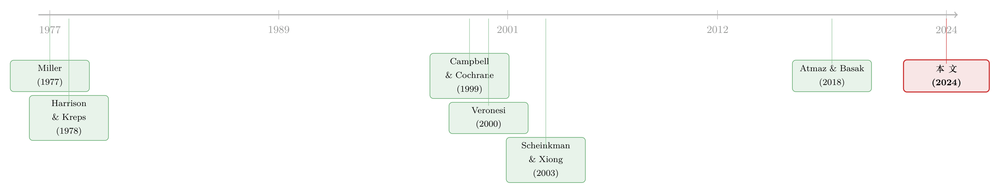

分歧本身没那么重要，重要的是「信息质量」在变
本文读的是 Xiouros & Zapatero (2024, Journal of Financial Economics)：在一个有连续统 (continuum) 投资者、信念分歧、且信息质量随时间变化的一般均衡交换经济里，作者证明了一件相当反直觉的事——单纯的「分歧」几乎不会制造超额股价波动；真正能撬动股价、解释股权溢价、并把实际收益率曲线掰成上斜的，是信息质量的波动，因为它才是分歧的真正引擎。
1 引言：一个被「大数定律」悄悄杀死的旧故事
先讲一个在资产定价里几乎已成「常识」的故事。
人们普遍相信：投资者对未来看法不一致（disagreement），市场价格就会比基本面应有的波动更剧烈。直觉很顺——乐观的人买、悲观的人卖，投机 (speculation) 让财富在两类人之间来回转移，价格被这股「情绪」推得忽上忽下。于是从 Miller (1977) 起，一代又一代的模型都在论证：分歧 → 超额波动 (excess volatility)。这条因果链如此自然，以至于很少有人回头问：它真的成立吗？
Xiouros and Zapatero (2024) 这篇文章的出发点，恰恰是回头问了这一句。而且他们给出的答案是：在一个「干净」的一般均衡里，分歧本身几乎什么都做不了。
这听上去几乎是在跟整条文献作对。要把这个反转讲清楚，作者做了一件别人没做过的事——把三样东西同时塞进一个还能解析求解 (closed-form) 的模型里：(1) 连续统的异质信念投资者，(2) 随时间变化的信息质量 (information quality)，(3) 参照点依赖 (reference-dependent) 的习惯形成偏好。三者缺一不可，而真正点石成金的，是中间那个被以往文献忽略的变量：信息质量。
（关于「分歧」如何进入定价的另一条思路，可参见《你卖出时，谁还在场？——把「需求分歧」写进资产定价》。）
2 模型设定：一步步把经济搭起来
这是一篇有完整理论模型的论文，我们就老老实实地把骨架一节节摆出来。
总量禀赋。 经济是一个纯交换 (pure exchange) 的禀赋经济，人均消费 \(C\) 外生。它的对数增长率条件正态，而条件均值 \(\mu_t\) 自己又是一个 AR(1) 过程：
$$ g_{t+1} \sim N(\mu_t,\ \sigma_c^2),\qquad g_{t+1} := \ln(C_{t+1}/C_t) $$
$$ \mu_{t+1} = \varphi_\mu\,\mu_t + (1-\varphi_\mu)\,\mu_c + \sigma_\mu\,\epsilon^\mu_{t+1} $$
这里 \(\mu_c\) 是长期均值，冲击 \(\epsilon^\mu\) 独立同分布 \(N(0,1)\)。关键在于：\(\mu_t\) 不可观测。 经济增长的「真实趋势」藏在水面下，谁也看不真切——这就是一切分歧的源头。
投资者、信息质量与分歧。 经济里住着一个连续统的投资者，\(i\in[0,1]\)，总质量为 1、密度恒为 1。他们都看不到 \(\mu_t\)，只能持有信念：
$$ \mu_t\,|\,\mathcal{F}_t \ \sim_i\ N(\mu_t^i,\ v_t^2),\qquad \forall i\in[0,1] $$
注意一个巧妙的设定：所有人的「不确定性」\(v_t\) 是一样的，他们只在点估计 \(\mu_t^i\) 上分歧。于是任一时刻投资者类型的分布仍是高斯的，整个横截面只需两个矩就能完全刻画——平均预测 \(\bar\mu_t\) 与预测分散度 \(\bar\nu_t\)：
$$ \bar\mu_t = \int_0^1 \mu_t^i\,di,\qquad \bar\nu_t^2 = \int_0^1 (\mu_t^i - \bar\mu_t)^2\,di $$
作者把这两个量分别叫做市场预期 (market expectation) 与市场预测分散度 (market forecast dispersion)——后面整篇文章的戏，全在这两个量身上。
信息质量登场。 每期所有人都观测到一个共同信号：
$$ sm_t = \rho_t\,\epsilon^\mu_t + \sqrt{1-\rho_t^2}\,\epsilon^m_t $$
这个 \(\rho_t\) 就是本文的主角——信息质量。它衡量共同信号有多大比例对准了真实冲击 \(\epsilon^\mu_t\)，又有多少是纯噪声 \(\epsilon^m_t\)。我们把这条最核心的方程拆开标注一下：
机制的精髓在这里：当共同信号弱（\(\rho_t\) 低）时，人们无从从公共信息里学到东西，于是退回各自的「部落信念」(tribal beliefs)，分歧上升。换句话说，分歧与信息质量是反向绑定的：信息质量一差，分歧就涨。这个绑定，是后面所有结论的钥匙。
习惯形成那一块，作者沿用 Campbell and Cochrane (1999) 的设定、并把它推广到非独立同分布的消费增长上，参照点依赖则采用 Constantinides (1990) 的形式。为什么非要加偏好这一层？因为 Panageas (2020) 已经指出，单靠分歧根本解释不了风险的市场价格；要把量级算对，必须有一个能产生时变风险价格的偏好引擎。
3 真正关键的一步：连续统如何「杀死」分歧的旧故事
现在来兑现引言里那个反转。
文献预测分歧会制造超额波动，靠的是两条通道。第一条：分歧通过投机改变市场预期（也就是常说的 sentiment）的波动——猜对的人财富增加，下一轮对总量冲击更敏感，于是市场预期被放大。这是 Atmaz and Basak (2018) 的重点。第二条：市场预测分散度本身在波动。
作者一条一条把它们拆掉。
对第一条，他指出：市场预期除了被投机放大，也会因为「更新信念」而变动，而后者继承的是真实均值增长 \(\mu_t\) 的持续性——这个持续性在数据里（专业预测者的平均预测）根本不够高，撑不起显著的股价波动。更狠的是，前面那个绑定在此处反咬一口：分歧高 ⟺ 信息质量低 ⟺ 大家从现实里学得少 ⟺ 市场预期反而更不波动。
对第二条，反转出现得最漂亮。以往拿「分散度波动」说事的研究——Zapatero (1998)、Buraschi and Jiltsov (2006)、David (2008)、Dumas et al. (2009)——清一色是两个投资者的模型。两个人时，投机给财富分布带来的冲击会永久性地改变市场分散度。但当你把投资者换成一个连续统，大数定律 (law of large numbers, LLN) 开始起作用：
在稳态下，投机导致的分散度下降，恰好被分歧带来的分散度上升完美抵消。于是只要分歧和信息质量不变，市场预测分散度就是个常数——它根本不动。
这就是第一个核心结果：若分歧与信息质量都恒定，分歧对股价波动的影响可忽略不计。 两个投资者的世界里分散度能上能下，连续统的世界里它纹丝不动。把投资者「数」从 2 改成 \(\infty\)，整条旧因果链就断了。作者特别强调，这个结论甚至不依赖「信息质量—分歧」那层绑定——哪怕分歧来源恒定、压根没有共同信号，结论照样成立。
4 信息质量：分歧的真正引擎
旧故事死了，那超额波动从哪来？
答案是：让信息质量动起来。 这是第二个核心结果——有分歧存在时，信息质量的波动会制造出可观的超额股价波动，在校准后的模型里，这部分超额波动几乎占到了数据中观测波动的一半。
逻辑链是这样的：信息质量 \(\rho_t\) 一变，因为它与分歧反向绑定，市场预测分散度就跟着变；分散度一变，投资者的投机头寸随之调整；而由于信念对状态价格有非对称影响（Jouini and Napp 2006a,b, 2007），这些头寸又会推动无风险利率。于是——持续的信息质量冲击，翻译成了持续的无风险利率冲击，量级大到足以掀起股价的大幅波动。
在校准里，无风险利率被市场预测分散度正向推动，因为相对悲观者对储蓄需求的影响更强；因此股市对信息质量的正向冲击是正向反应的（信息变好 → 分歧、分散度、无风险利率一起回落）。这也顺手解释了一个数据事实：预测分散度与股市强烈负相关。
而第三个结果像是一记补刀：若没有分歧，单是信息质量波动，对股价波动和股权溢价同样可忽略不计（这正是 Veronesi (2000) 在代表性投资者框架下、Ai (2010) 在生产经济里研究过的情形）。
于是三个结果连起来，指向同一个判断：起作用的既不是孤立的分歧，也不是孤立的信息质量波动，而是两者的交互。 以往文献各执一端，恰恰都落在了「不重要」的那一半上。
5 从股票到债券：期限溢价与那条「掰直」了的实际收益率曲线
把这个交互推到底，就得到第四个结果，也是把故事从股票延伸到债券的关键一跃。
这个交互制造的超额波动，会催生一个期限溢价 (term premium)，反过来抬高股权溢价。机制有两步：其一，数据里预测者之间的分歧是逆周期的——因为信息质量正向且强烈地依赖于增长率冲击；其二，如前所述，股市对信息质量上升是正向反应的。两者合起来意味着：坏的总量冲击会同时压低信息质量、推高分歧，从而打压股市——投资者要为承担这份风险索取补偿。
更妙的是它对债券市场的含义。一个老掉牙的事实是名义收益率曲线上斜，主流解释把它归给通胀风险溢价（Piazzesi and Schneider 2006、Rudebusch and Swanson 2012、Bansal and Shaliastovich 2013、Kung 2015）。但这些模型有个尴尬的副产品：它们预测实际收益率曲线是下斜的——而这与 Roll (2004)、Hsu et al. (2021) 基于 TIPS 的证据相矛盾。实际曲线之所以会下斜，根子在总量消费增长的正自相关（Campbell 1986）。Wachter (2006) 和 Hsu et al. (2021) 提出，用习惯形成可以把实际曲线掰回上斜。
本文采用 Campbell and Cochrane (1999) 的设定，让习惯带来的两种动机正好抵消，于是在没有分歧、没有信息质量波动时，实际曲线是下斜的——然后，一旦把分歧和信息质量波动加进来，TIPS 实际收益率曲线自然就上斜了。
（这条把股票、债券与久期放进同一框架的思路，与《久期错配：当我们把股票和「同样年限」的债券放在一起比》的关切是相通的。）
6 数据与量化结果
模型不是空谈，作者拿数据把参数钉死。分歧那部分的参数，用专业预测者调查 (Survey of Professional Forecasters, SPF) 里关于 GDP 增长的预测来估计——平均预测和分散度的演化过程，都从这套数据里推出来。
最能服人的一个数字在长期实际收益率上。把预测者分散度当作代理变量，模型隐含的长期实际收益率与数据里推断的实际收益率显著相关：20 年期收益率的相关系数达到 0.45；而作为对照，若假设信息质量恒定、或假设没有分歧，这个相关系数分别是 -0.29 和 -0.37——不仅小，连符号都是反的。一正一负之间，正是「信息质量波动 × 分歧」这个交互项的贡献。
此外，模型还一并对上了股权溢价、股市波动率、无风险利率与股市的低相关、股市与分散度的高相关等一系列事实。
文献脉络
把这篇论文放回它生长的那条藤上，脉络相当清晰。
源头是 Miller (1977)：异质预期叠加卖空约束，价格被乐观者绑架，于是高估。Harrison and Kreps (1978) 和 Scheinkman and Xiong (2003) 用局部均衡 (partial equilibrium) 把这个「投机泡沫」的直觉做实，但代价是假设了风险中性的投资者。Varian (1985) 则在静态完全市场里指出，分歧对状态价格的影响要看效用函数的性质。
接着，故事走进一般均衡。Detemple and Murthy (1994)（生产经济）与 Zapatero (1998)（纯交换）正面分析异质信念的定价后果；Gallmeyer and Hollifield (2008) 在风险厌恶 + 卖空约束下发现，分歧可能抬高也可能压低股价；Jouini and Napp (2006a,b) 在无摩擦设定里得到类似的「可上可下」结论。这一支的共同尴尬是：分歧的方向性效应模糊，而真正的量级始终算不大。Dumas et al. (2009) 用一个过度自信投资者制造「sentiment」风险，Xiong and Yan (2010) 则把异质通胀预期搬进债券市场。

但这些模型几乎都困在「有限类型」里——Yan (2008) 早就指出，有限类型的均衡是非平稳的，长期看只有一类人能活下来。要得到平稳均衡，就得请出连续统：Atmaz and Basak (2018) 沿这条路用连续统刻画 sentiment。本文站的正是这个位置——它把连续统、不可观测状态的信念更新、参照点偏好三者并到一起，再首次引入「信息质量」作为分歧的驱动变量，并因此拿到一个平稳均衡。也正是连续统 + 大数定律，让它得以推翻「分歧自动制造超额波动」的旧论断，再用信息质量把波动重新请回来。
评论与延伸（Q&A + 研究方向）
(a) 几个可能的疑问
Q：说「分歧不重要」，是不是有点标题党？
不算。准确的说法是：恒定的分歧、在连续统里、对股价波动可忽略。这是个很有针对性的结论——它专门打的是「分歧→超额波动」这条被默认成立的链条。文章并没有说分歧没用，恰恰相反，分歧是信息质量发挥作用的必要条件（第三个结果：没有分歧，信息质量波动也白搭）。
Q：连续统让分散度变成常数，这是不是个「太巧」的假设？
这正是最该追问的地方。分散度恒定来自「投机致跌」与「分歧致升」在稳态的完美抵消，背后是大数定律。它的稳健性在于：作者强调这个结果不依赖信息质量与分歧的绑定，哪怕没有共同信号、分歧来源恒定，结论照样成立。但它确实依赖连续统这个理想化——现实中投资者数目有限，抵消未必精确。这是模型力量的来源，也是它的软肋。
Q：信息质量 \(\rho_t\) 看不见摸不着，怎么验证？
作者用预测者分散度作为信息质量的可观测代理（二者反向绑定），再去对长期实际收益率等矩。20 年期
0.45的相关系数就是这么来的。代理是否干净，是这条经验链最值得推敲的环节——分散度也可能被信息质量以外的东西推动。
Q：为什么非得加习惯形成？纯 CRRA 不行吗？
因为要把量级算对，必须解释风险的市场价格，而 Panageas (2020) 已证明分歧单独做不到这件事。习惯形成（Campbell-Cochrane 式）提供了时变的风险价格引擎；CRRA 是它的特例，作者也一并讨论了。
Q：完全市场假设让投资者能交易「基于私人信号」的证券，这现实吗？
作者自己也承认这初看很极端。他的辩护是：这些信号关乎整体经济，因此对股、债、衍生品本就有相关性。更重要的是，他还解了一个不完全市场的版本——靠大数定律刻画均衡，发现对 log 效用投资者两者等价，对一般幂效用 + 习惯也只有「微不足道」的差别，因为信号只给个体消费添了点特异风险，加总后几乎为零。
Q：这和「实际收益率曲线上斜」的其他解释怎么区分？
Wachter (2006) 等用习惯就能把实际曲线掰上斜。本文的增量在于：在它的设定里，光有习惯（且两种动机抵消）实际曲线是下斜的，是「分歧 + 信息质量波动」这一交互把它推成上斜。所以它提供的是一个有别于纯习惯、也有别于通胀风险溢价的新机制。
(b) 几个可能的研究问题与提案
-
把「信息质量」搬进公司债市场。 【经济故事】本文的核心是「信息质量↓→分歧↑→风险溢价↑」。信用市场对信息质量极其敏感——评级、财报、宏观能见度一差，信用利差就走阔。能否用本文的交互机制解释信用利差的超额波动？ 【可行性】中。需要某个分歧/信息质量代理（如分析师对违约的分歧、评级机构间分歧），数据可得（TRACE + 评级 + I/B/E/S），但把连续统模型对到信用利差需要不小的结构性改造。
-
外资持有人作为「信息质量」的外生冲击源。 【经济故事】外资进入往往伴随信息环境的改变（既可能改善披露，也可能因「水土不服」加剧分歧）。若外资份额变化能近似为信息质量的外生扰动，就能检验本文「信息质量→分歧→定价」的链条。 【可行性】中。可用债券或股票的外资持有数据 + 指数纳入等准自然实验做识别，识别策略相对干净；难点在于把「外资=信息质量冲击」论证清楚。
-
用 SPF 分散度直接检验「分散度恒定」的稳态预言。 【经济故事】模型最反直觉的微观预言是：稳态下市场预测分散度应当不动，它的波动应当几乎全部由信息质量冲击驱动。这是个可以直接证伪的命题。 【可行性】高。SPF/Blue Chip 的分散度时间序列现成，可做方差分解，看分散度的变动有多少能被信息质量代理（如宏观数据修正幅度、预测误差波动）解释。
-
流动性与信息质量的共动。 【经济故事】信息质量恶化时分歧上升、投机头寸调整——这与做市、流动性需求高度相关。能否把流动性（而非仅无风险利率）作为信息质量冲击的传导通道？ 【可行性】中。需要把交易/流动性维度嵌入模型，经验侧可用买卖价差、Amihud 等对分散度回归；理论扩展工作量较大。
-
久期视角下的实际收益率曲线检验。 【经济故事】本文预言交互项把实际曲线掰上斜。可以沿久期把股票与 TIPS 放在一起，检验「信息质量风险」是否在长久期资产上定价更重。 【可行性】高。TIPS 与久期分组的股票数据均可得，是一个相对直接的横截面检验。
我的判断
这篇文章最大的贡献，是用一个能解析求解、且平稳的一般均衡，把「分歧→超额波动」这条被默认了快五十年的链条，干净利落地拆开重装：先用连续统 + 大数定律证明旧链条在稳态下其实是空的，再用「信息质量波动」这个被忽视的变量把波动重新请回来，并一路打通到期限溢价和实际收益率曲线。把三种以往各自为战的机制（分歧、信息质量、习惯）放进一个框架，还能逐一量化各自贡献，这件事本身就很有分量。
对识别（更准确说，对经验映射）我有两点担心。其一，整套经验检验高度依赖「预测者分散度 ≈ 信息质量的逆」这个代理，而分散度完全可能被信息质量以外的因素（异质先验、政治不确定性、注意力）推动，0.45 这个相关系数究竟有多少属于信息质量通道，还需要更外生的工具来切。其二，「分散度恒定」靠的是连续统下的精确抵消，这在有限投资者、有进出摩擦的现实里能稳到什么程度，是个开放问题。
后续我最想看到的，是把这套机制接到一个有外生信息质量冲击的经验场景里——比如某次披露制度改革、或外资准入的放开——直接验证「信息质量↓→分歧↑→风险溢价↑」的因果方向，而不只是停留在矩匹配。能做到这一步，这个理论才算真正落了地。
（关于「贴现率才是资产定价中心议题」的大背景，见《贴现率：资产定价的中心议题》；关于在实验室里把「信念」从「真金白银」里拆出来的努力，见《通胀来了，股票是「真资产」还是「纸面财富」？》。）
参考文献
- Atmaz, A., & Basak, S. (2018). Belief dispersion in the stock market. Journal of Finance 73(3), 1225–1279.
- Campbell, J. Y. (1986). Bond and stock returns in a simple exchange model. Quarterly Journal of Economics 101(4), 785–803.
- Campbell, J. Y., & Cochrane, J. H. (1999). By force of habit: a consumption-based explanation of aggregate stock market behavior. Journal of Political Economy 107(2), 205–251.
- Constantinides, G. M. (1990). Habit formation: a resolution of the equity premium puzzle. Journal of Political Economy 98(3), 519–543.
- Detemple, J., & Murthy, S. (1994). Intertemporal asset pricing with heterogeneous beliefs. Journal of Economic Theory 62(2), 294–320.
- Dumas, B., Kurshev, A., & Uppal, R. (2009). Equilibrium portfolio strategies in the presence of sentiment risk and excess volatility. Journal of Finance 64(2), 579–629.
- Gallmeyer, M., & Hollifield, B. (2008). An examination of heterogeneous beliefs with a short-sale constraint in a dynamic economy. Review of Finance 12, 323–364.
- Harrison, J. M., & Kreps, D. M. (1978). Speculative investor behavior in a stock market with heterogeneous expectations. Quarterly Journal of Economics 92(2), 323–336.
- Hsu, A., Li, E. X. N., & Palomino, F. (2021). Real and nominal equilibrium yield curves. Management Science 67(2), 1138–1158.
- Jouini, E., & Napp, C. (2006a). Heterogeneous beliefs and asset pricing in discrete time. Journal of Economic Dynamics and Control 30, 1233–1260.
- Miller, E. M. (1977). Risk, uncertainty, and divergence of opinion. Journal of Finance 32(4), 1151–1168.
- Panageas, S. (2020). The implications of heterogeneity and inequality for asset pricing. NBER Working Paper.
- Roll, R. (2004). Empirical TIPS. Financial Analysts Journal 60(1), 31–53.
- Scheinkman, J. A., & Xiong, W. (2003). Overconfidence and speculative bubbles. Journal of Political Economy 111(6), 1183–1220.
- Varian, H. R. (1985). Divergence of opinion in complete markets: a note. Journal of Finance 40(1), 309–317.
- Veronesi, P. (2000). How does information quality affect stock returns? Journal of Finance 55(2), 807–837.
- Wachter, J. (2006). A consumption-based model of the term structure of interest rates. Journal of Financial Economics 79(2), 365–399.
- Xiong, W., & Yan, H. (2010). Heterogeneous expectations and bond markets. Review of Financial Studies 23(4), 1433–1466.
- Xiouros, C., & Zapatero, F. (2010). The representative agent of an economy with external habit-formation and heterogeneous risk-aversion. Review of Financial Studies 23(8), 3017–3047.
- Yan, H. (2008). Natural selection in financial markets: does it work? Management Science 54(11), 1935–1950.
- Zapatero, F. (1998). Effects of financial innovation on market volatility when beliefs are heterogeneous. Journal of Economic Dynamics and Control 22(4), 597–626.